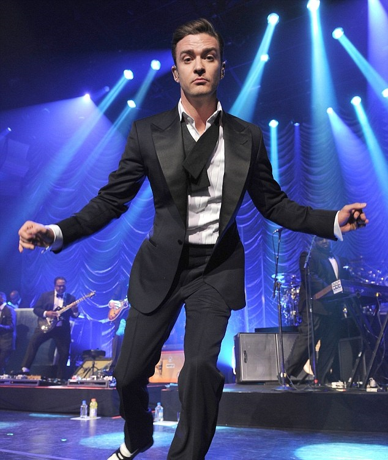
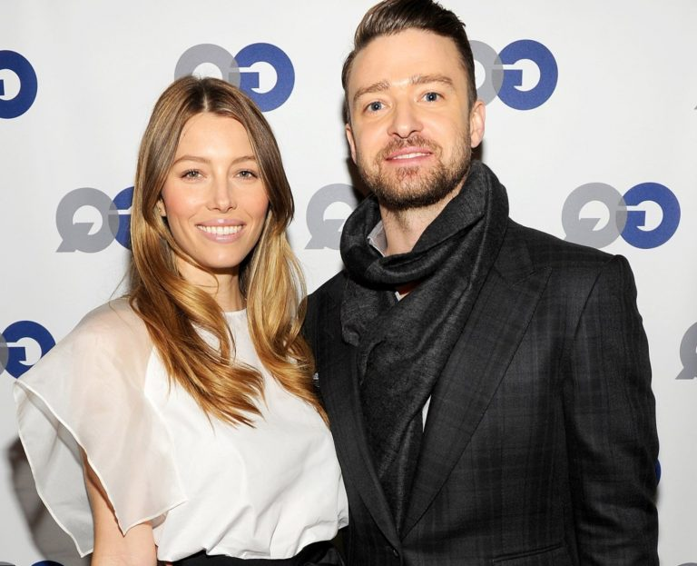

|
Justin Randall Timberlake was born on January 31, 1981 in Memphis, Tennessee to Lynn (Bomar) Harless and Charles Randall Timberlake, a Baptist church choir director. Timberlake grew up in Shelby Forest, a small community between Memphis and Millington. His family circle includes a number of musicians; his grandfather introduced him to music from country artists like Johnny Cash and Willie Nelson. Performing as a child, Timberlake sang country and gospel music: at the age of 11, he appeared on the television show Star Search, performing country songs as "Justin Randall". By that time, he began listening to rhythm and blues musicians from the 1960s and 70s, such as Al Green, Stevie Wonder and Marvin Gaye, and he had listening sessions with his father of studio albums by the Eagles and Bob Seger. |
| The boy band NSYNC formed in 1995, and began their career in 1996 in Europe; Timberlake and Chasez served as its two lead singers. In 1998, the group rose to prominence in the United States with the release of their self-titled debut studio album, which sold 11 million copies and included the single "Tearin' Up My Heart". Their second album No Strings Attached (2000) sold 2.4 million copies in the first week, and included a number one single, "It's Gonna Be Me". In its lifetime, NSYNC was internationally famous and performed at the Academy Awards, the Olympics, and the Super Bowl, as well as selling more than 70 million records worldwide, becoming the fifth-best selling boy band in history. In late 1999, Timberlake appeared in the Disney Channel movie Model Behavior. He played Jason Sharpe, a model who falls in love with a waitress after mistaking her for another model. It was released on March 12, 2000. The rise of his own stardom and the general decline in the popularity of boy bands led to the dissolution of NSYNC. In August 2002, Timberlake performed at the 2002 MTV Video Music Awards, where he premiered his debut solo single "Like I Love You"; it peaked at number 11 on the Billboard Hot 100. His debut solo studio album Justified was at number two on the Billboard 200 with first-week sales of 439,000 copies. It went on to sell over ten million copies worldwide. After the Super Bowl incident, Timberlake put his recording career on hold to act in several films, having starred in a few feature films earlier in his career. The first role he took during this time was as a journalist in Edison Force, filmed in 2004 and received a direct-to-video release on July 18, 2006. Timberlake began work on his third studio album The 20/20 Experience in June 2012, with "no rules and/or end goal in mind".[88] He publicly announced his return to the music industry in January 2013,[89] releasing the album's lead single "Suit & Tie" featuring Jay-Z later that month, which would eventually peak at number three on the Billboard Hot 100. Timberlake voiced the lead character in DreamWorks Animation's musical comedy Trolls opposite Anna Kendrick. The film was released in November 2016,[121] and will return for its sequel Trolls 2 in 2020. On February 26, 2017, Timberlake opened the 89th Academy Awards with a performance of "Can't Stop the Feeling!", since the song earned him a nomination. |
 |
|  |
In early 1999, Timberlake began dating fellow former The All-New Mickey Mouse Club cast member and singer Britney Spears. Their relationship ended abruptly in March 2002. Both Spears and Timberlake graduated high school via distance learning from the University of Nebraska High School; Timberlake received his diploma onstage during a concert in Memphis in 2000. In April 2003, he began dating actress Cameron Diaz soon after they met at the Nickelodeon Kids' Choice Awards. After much speculation of breakups throughout their relationship, the couple split in December 2006 shortly after she introduced him as a musical guest on Saturday Night Live. In January 2007, Timberlake began dating actress Jessica Biel. They became engaged in December 2011 and married on October 19, 2012, at the Borgo Egnazia resort in Fasano, Italy. Timberlake and Biel have one son, Silas Timberlake, born on April 11, 2015. |